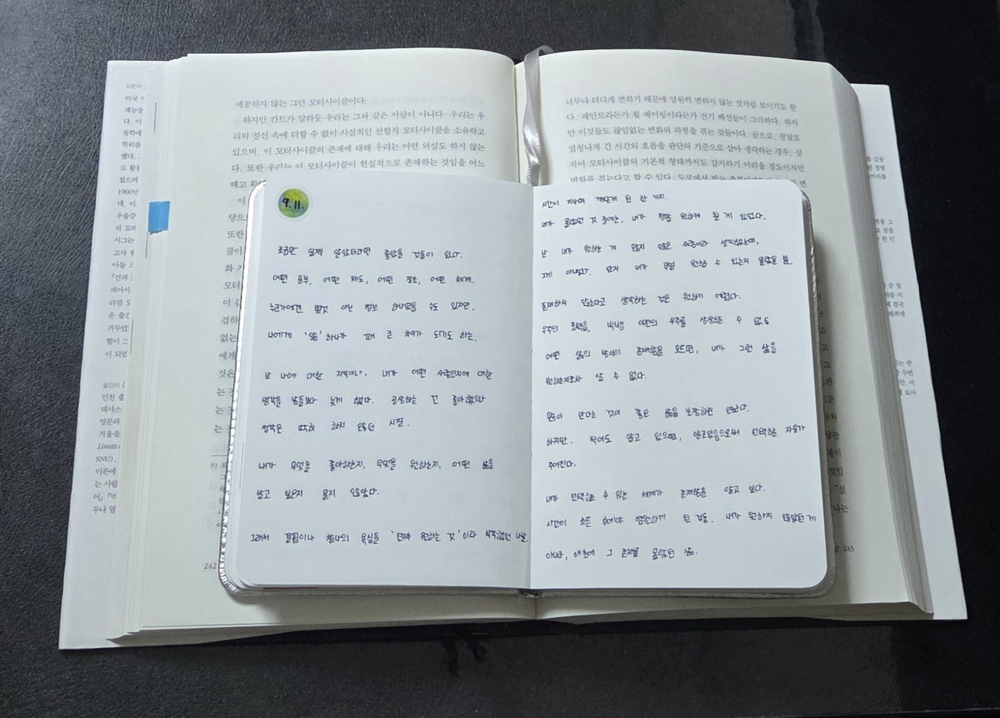
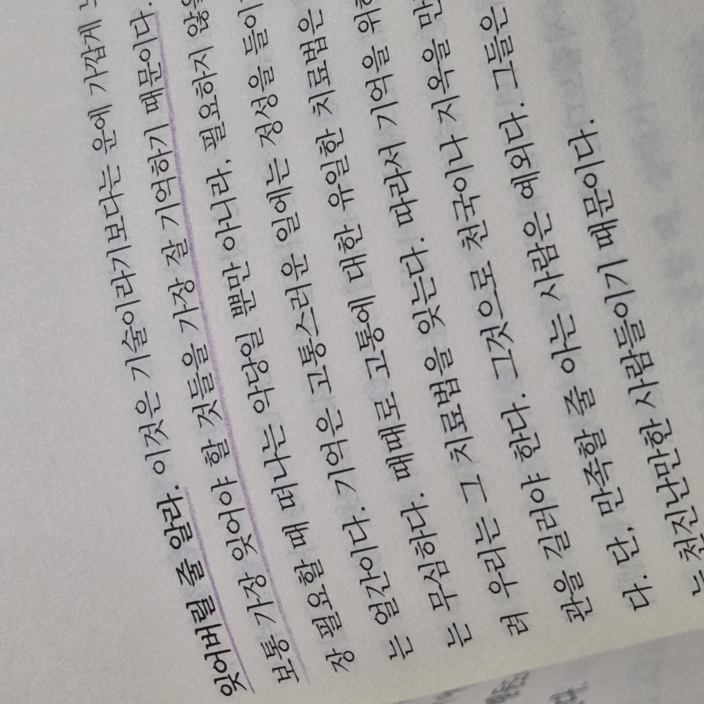

ESSAY · 01
늦게 알아서 아쉬운 것들
2026.09

정보의 빈부격차
“진작 알았으면 좋았을 텐데.” 하는 것들이 있으신가요? 저에게는 진작 알았으면 좋았을 것이 몇 개 있답니다.
쏟아지는 정보의 홍수 속에서 나에게 필요한 정보만을 골라내는 능력도 필수적인 시대지만, 내게 필요한 정보를 얻는 방법도 꼭 알고 있어야 하는 것 같아요.
* ‘내가 원하는’ 정보가 아닌, ‘내게 필요한’ 정보라는 점에서 차이가 있다는 사실! (물론, 필요하지 않을 수도 있음.)

놓쳐서 아쉬운 것들!
고등학교 진학
살짝 속되게 표현하자면, 전 소위 촌년이랍니다. 지방 소도시에서 나고 자랐는데요(여기까진 문제가 안 됨). 어릴 적 자아 형성 시기가 늦게 왔고 내가 무얼 원하고 좋아하는지 취향을 탐구하거나 접할 기회가 많이 없었기에 (초록 독자들껜 상식일)고급 정보에 가까이 갈 수가 없었어요.
유난히 과학을 좋아했던 어린 시절의 저는 중학교 3학년 여름이 되어서야 ‘과학고’나 ‘자사고’의 존재를 알게 되었고 특목고에 진학하고 싶다는 바람을 가졌었답니다.
하지만 특목고 입시는 보통 초등학교 때부터 준비하더군요. 내가 아무리 애를 써도 방향 자체를 잘못 설정한 질주는 별 의미가 없잖아요. 그게 고등학생이 되어서도, 대학생이 되어서도, 심지어 지금까지도 약간의 후회와 미련이 되어 남아있어요.
성적이나 사정, 상황 때문에 욕심을 안 낸 게 아니라 ‘존재 자체를 몰랐’기에 탐을 낼 수조차 없었던 거죠.
인간은 후회하는 순간을 되돌리고 싶어 하잖아요. 시간을 거슬러 올라가는 상상을 하면 저는 늘 과학을 사랑하는, 기술을 애정하는 사람들 사이에 앉아 깊이 몰입하고 있는 (어쩌면 될 수도 있었던)저를 그려보곤 해요.
국가 제도&대학 생활
국가에서 대학생 대상으로 지원하는 제도가 참으로 많다는 걸 저는 또 몇 발 늦게 알았는데요. 지금 생각해도 정말 아깝고 아쉽고 그래요.
특히 ‘대학생 창업 지원’제도를 활용하지 못한 게 가장 한이 되더라고요.
물론, 이러한 정보들을 알았다고 해서 이를 바로 활용했다거나 관심 갖지 않을 수도 있었단 걸 압니다. ‘알게 됨’이 꼭 ‘원함’이나 ‘선택’으로 이어지지는 않으니까요.
하지만 ‘선택할 수 있었는데 선택하지 않은 것’과 ‘알지 못했기에 선택할 수 없던 것’은 다르지 않을까요.
‘어쩌면 될 수도 있던’ 나에게 쓰는 약간의 시간이라고 생각하면 우리 인생은 매 순간 ‘선택과 선택’으로 이어지는구나 싶어요.
그래서 나는 지금,
전 아직도 ‘제일 좋아하는 음식’이나 ‘좋아하는 연예인’, ‘이상형’ 등이 없답니다. 조금 늦게 나라는 사람이 무엇에 끌리는지, 무엇에 시선을 오래 두는지 알아가는 중이에요!
‘이거 좋아해.’, ‘난 저런 게 취향이야.’라고 말하지 않아도 자연스레 내 곁에 머무는 것을 통해 나라는 사람을 들여다 보는 일. 이걸 위해서 최대한 많이 보고, 듣고, 만지고 감각하려고 노력해요.
선택의 범위를 넓히는 것. 내가 사는 세계를 풍요롭게 하는 것. 좋아하고 궁금한 지식에의 접근성. (저는 이건 ‘언어’ 같아요.)
다양한 걸 접하고, 많은 걸 누리기 위해 생전 하지 않던 영어 공부도 하고 있답니다.
앎과 행복의 상관관계
이 글은 아빠와의 대화가 시발점이었어요.
“개발도상국들이 우리보다 더 행복하잖아. 그게 왜 일 것 같아. 모르니까. 잘 몰라서 그래. 네가 구석기에 살았어 봐. 당장 오늘 하루 먹고 살 걱정만 하면 되는데, 가지지 못해서 신경 쓰이는 게 있었을 것 같아?”
이 말에 생각했어요. 많이 아는 게 꼭 행복할까. 적게 알고, 그게 전부인지 알고 만족함이 진짜 만족일까.
많이 안다는 것이 좋은 삶을 보장하진 않지만, 적어도 알고 있음으로써 선택할 자유가 주어지지 않을까. 애초에 선택지 자체를 모르는 것보다는 알고 있는 편이 낫지 않을까?
왜냐하면, 나중에 더 넓은 세상이 있다는 걸 알게 됐을 때, “그걸 조금이라도 더 일찍 알았더라면?”이라는 후회가 생길지도 모르니까요.